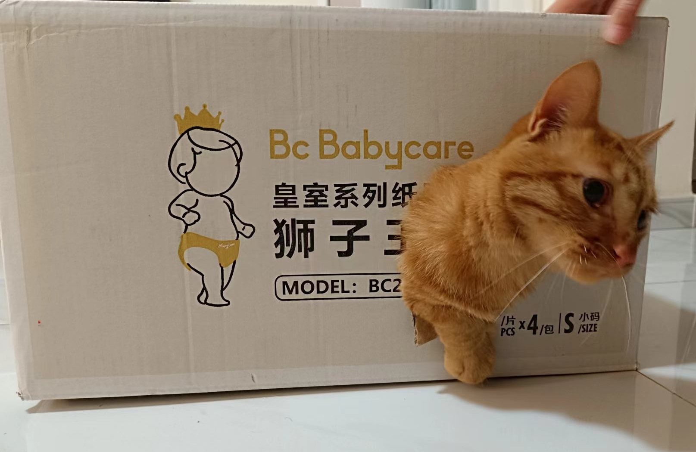

About Me
I obtained Ph.D. degree at the Univeristy of Hong Kong (HKU), advised by
Prof. Wenping Wang
and Prof. Taku Komura.
Before that, I did my bachelor's degree in Control Science & Engineering at Zhejiang University,
supervised by Prof. Junfeng Wu.
My research lies in
3D Generative Models, and I am also interested in
Neural Rendering, 3D Reconstruction, AI for Robotics etc.
We are organizing AnySyn3D,
a research interest group that conducts various topics about the 3D.
We could host multiple remote/onsite internships, with topics i) 3D generation, ii) Gaussian Splatting, iii) 3DV for Robotics, iv) Autonomous Driving.
If you are interested in working with us, feel free to drop me an email.
News
- 2024.07 GaussianGrasper is accepted to RAL 2024. Congrats to Yuhang, thanks for your efforts!
- 2024.07 GeoWizard is accepted to ECCV 2024. Congrats to Xiao Fu, thanks for your efforts!
- 2024.05 GaussianPro is accepted to ICML 2024. Congrats to Kai Cheng, thanks for your efforts!
- 2024.03 ASN++ is accepted to PAMI. Congrats to Yuhang, thanks for your efforts!
- 2024.02 Wonder3D is accepted to CVPR2024 Highlight.
- 2024.02 GaussianShader is accepted to CVPR2024. Congrats to Wenqi, thanks for your efforts!
- 2024.01 MonoOcc was accepted to ICRA 2024. Congrats to Yupeng, thanks for your efforts!
- 2024.01 UC-NeRF was accepted to ICLR 2024. Congrats to Kai Cheng, thanks for your efforts!
Selected Publications (full papers)
* Equal contributions; † Corresponding authors
Arxiv
[WebPage]
[Paper]
[Code]

DC-Gaussian: Improving 3D Gaussian Splatting for Reflective Dash Cam Videos
Linhan Wang,
Kai Cheng, Shuo Lei, Shengkun Wang, Wei Yin, Chengyang Lei, Xiaoxiao Long†, Chang-Tien LuArxiv [WebPage] [Paper]
CraftsMan: High-fidelity Mesh Generation with 3D Native Generation and Interactive Geometry Refiner
Weiyu Li*,
Jiarui Liu*, Rui Chen, Yixun Liang, Xuelin Chen, Ping Tan, Xiaoxiao Long†
Arxiv
[WebPage]
[Paper]
[Code]

Era3D: High-Resolution Multiview Diffusion using Efficient Row-wise Attention
Peng Li*,
Yuan Liu*,
Xiaoxiao Long†,
Feihu Zhang,
Cheng Lin,
Mengfei Li,
Xingqun Qi,
Shanghang Zhang,
Wenhan Luo,
Ping Tan,
Wenping Wang,
Qifeng Liu,
Yike Guo†
Arxiv
[WebPage]
[Paper]
[Code]

Metric3D v2: A Versatile Monocular Geometric Foundation Model for Zero-shot Metric Depth and Surface Normal Estimation
Mu Hu*,
Wei Yin*, Chi Zhang, Zhipeng Cai, Xiaoxiao Long†, Hao Chen, Kaixuan Wang, Gang Yu, Chunhua Shen, Shaojie Shen
T-PAMI 2024
[WebPage]
[Paper]
[Code]
[Live Demo]

GaussianGrasper: 3D Language Gaussian Splatting for Open-vocabulary Robotic Grasping
Yuhang Zhen,
Xiangyu Chen,
Yupeng Zheng,
Songen Gu,
Runyi Yang,
Bu Jin,
Pengfei Li,
Chengliang Zhong,
Zengmao Wang,
Lina Liu,
Chao Yang,
Dawei Wang,
Zhen Chen,
Xiaoxiao Long†,
Meiqing Wang†
RAL 2024
[WebPage]
[Paper]
[Code]


Surf-D: High-Quality Surface Generation for Arbitrary Topologies using Diffusion Models
Zhengming Yu*,
Zhiyang Dou*,
Xiaoxiao Long,
Cheng Lin,
Zekun Li,
Yuan Liu,
Norman Müller,
Taku Komura,
Marc Habermann,
Christian Theobalt,
Xin Li,
Wenping Wang
ECCV 2024
[WebPage]
[Paper]
[Code]

Part123: Part-aware 3D Reconstruction from a Single-view Image
Anran Liu*,
Cheng Lin*, Yuan Liu, Xiaoxiao Long†, Zhiyang Dou, Hao-Xiang Guo, Ping Luo, Wenping Wang†,SIGGRAPH 2024 [WebPage] [Paper]
GaussianPro: 3D Gaussian Splatting with Progressive Propagation
Kai Cheng*,
Xiaoxiao Long*, Kaizhi Yang, Yao Yao, Wei Yin, Yuexin Ma, Wenping Wang, Xuejin Chen
ICML 2024
[WebPage]
[Paper]
[Code]

ASN++: Adaptive Surface Normal Constraint for Geometric Estimation from Monocular Images
Xiaoxiao Long*,
Yuhang Zheng*,
Yupeng Zheng,
Beiwen Tian,
Cheng Lin,
Lingjie Liu,
Hao Zhao†,
Guyue Zhou,
Wenping Wang†
PAMI 2024 [WebPage] [Paper] [Code]
Wonder3D: Single Image to 3D using Cross-Domain Diffusion
Xiaoxiao Long*,
Yuanchen Guo*,
Cheng Lin†,
Yuan Liu,
Zhiyang Dou,
Lingjie Liu,
Yuexin Ma,
Song-Hai Zhang,
Marc Habermann,
Christian Theobalt,
Wenping Wang†
CVPR2024
[WebPage]
[Paper]
[Code]
[Live Demo]

GaussianShader: 3D Gaussian Splatting with Shading Functions for Reflective Surfaces
Yingwenqi Jiang,
Jiadong Tu,
Yuan Liu,
Xifeng Gao,
Xiaoxiao Long✝,
Wenping Wang,
Yuexin Ma✝
CVPR2024
[WebPage]
[Paper]
[Code]

MonoOcc: Digging into Monocular Semantic Occupancy Prediction
Yupeng Zheng,
Xiang Li,
Xiaoxiao Long#,
Pengfei Li,
Yuhang Zheng,
Chengliang Zhong,
Bu Jin,
Hao Zhao,
Guyue Zhou,
Qichao Zhang
ICRA 2024 (# Project Lead)
UC-NeRF: Neural Radiance Field for Under-Calibrated Multi-view Cameras in Autonomous Driving
Kai Cheng*,
Xiaoxiao Long*, Wei Yin, Jin Wang, Zhiqiang Wu, Yuexin Ma, Kaixuan Wang, Xiaozhi Chen, Xuejin Chen
ICLR 2024
[Paper]
[Project Page]
[Code]

SyncDreamer: Generating Multiview-consistent Images from a Single-view Image
Yuan Liu,
Cheng Lin†,
Zijiao Zeng,
Xiaoxiao Long†,
Lingjie Liu,
Taku Komura,
Wenping Wang✝
ICLR 2024 (Spotlight)
[Paper]
[Project Page]
[Code]
[Live Demo]

NeTO: Neural Reconstruction of Transparent Objects with Self-Occlusion Aware Refraction-Tracing
Zongcheng Li*,
Xiaoxiao Long*,
Yusen Wang,
Tuo Cao,
Wenping Wang,
Fei Luo,
Chunxia Xiao
ICCV 2023
[Paper]
[Project Page]
[Code]

NeRO: Neural Geometry and BRDF Reconstruction of Reflective Objects from Multiview Images
Yuan Liu,
Peng Wang,
Cheng Lin,
Xiaoxiao Long,
Jiepeng Wang,
Lingjie Liu,
Taku Komura,
Wenping Wang
SIGGRAPH 2023 (Journal Track)
[Paper]
[Project Page]
[Code]

NeuralUDF: Learning Unsigned Distance Fields for Multi-view Reconstruction of Surfaces with Arbitrary Topologies
NeuralUDF: Learning Unsigned Distance Fields for Multi-view Reconstruction of Surfaces with Arbitrary Topologies
Xiaoxiao Long,
Cheng Lin†,
Lingjie Liu,
Yuan Liu,
Peng Wang,
Christian Theobalt,
Taku Komura,
Wenping Wang†
CVPR 2023
[Paper]
[Project Page]
[Code]

SparseNeuS: Fast Generalizable Neural Surface Reconstruction from Sparse Views
Xiaoxiao Long,
Cheng Lin,
Peng Wang,
Taku Komura,
Wenping Wang
ECCV 2022
[Paper]
[Project Page]
[Code]

Gen6D: Generalizable Model-Free 6-DoF Object Pose Estimation from RGB Images
Yuan Liu,
Yilin Wen,
Sida Peng,
Cheng Lin,
Xiaoxiao Long,
Taku Komura,
Wenping Wang
ECCV 2022
[Paper]
[Project Page]
[Code]
[Video]

NeuRIS: Neural Reconstruction of Indoor Scenes Using Normal Priors
Jiepeng Wang,
Peng Wang,
Xiaoxiao Long,
Christian Theobalt,
Taku Komura,
Lingjie Liu,
Wenping Wang
ECCV 2022
[Paper]
[Project Page]
[Code]

Adaptive Surface Normal Constraint for Depth Estimation
Xiaoxiao Long,
Cheng Lin,
Lingjie Liu,
Wei Li,
Christian Theobalt,
Ruigang Yang,
Wenping Wang
ICCV 2021
[Paper]
[Code]

Multi-view Depth Estimation using Epipolar Spatio-Temporal Networks
Xiaoxiao Long,
Lingjie Liu,
Wei Li,
Christian Theobalt,
Wenping Wang
CVPR 2021
[Paper]
[Project Page]
[Code]

Occlusion-Aware Depth Estimation with Adaptive Normal Constraints
Xiaoxiao Long,
Lingjie Liu,
Christian Theobalt,
Wenping Wang
ECCV 2020
[Paper]
[Project Page]
[Code]
[Video]

Experience
| Tencent Games | Research intern | 2022.07 – 2023.01 |
| Inceptio technology, Shanghai | Research intern | 2020.07 – 2021.07 |
| Cardiovascular Imaging Research Group, UCLA | Research intern | 2017.07 – 2017.09 |
Awards & Honors
- Hong Kong Ph.D. Fellowship Scheme [2018-2022]
- Zhejiang government Scholarship [2016,2017]
- First-Class Scholarship for Outstanding Students [2017]
- Supcon Scholarship [2017]
- Second-Class Scholarship for Outstanding Students [2015,2016]
Moments

